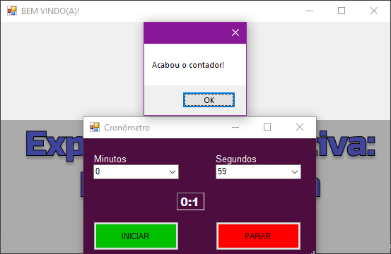
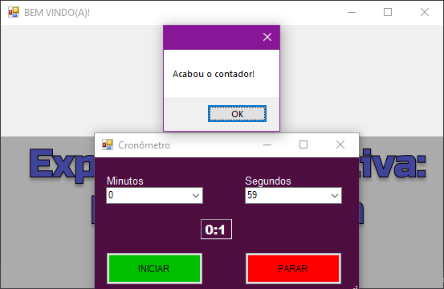

TDE 1 - O primeiro projeto de Experiência Criativa foi formular, em grupo,
um jogo com um público alvo e temática livre. O jogo proposto por nós foi formular
um jogo simples porém dinâmico e de fácil entendimento, decidimos por fazer um Tower Defense,
onde não existe necessariamente uma história e que tem o intuito de literalmente ser jogado,
onde a cada inimigo derrotado é recompensado um valor em Coins in Game pro jogador para
melhorar ou aumentar as defesas do mapa. Optamos por 3 tipos de torres, uma rápida e com dano
baixo, uma lenta mas com dano alto e a última que jogava os inimigos pra trás sem dar dano,
apenas retardando o avanço.
Grupo: Caio Santos, Gabriel Soto, João Vitor Brandão, Luigi, Matheus Magalhães, Paulo Ricardo e Rafael Nuñez
Segue foto do jogo:
TDE 2 - Com o uso da linguagem Java e do programa Processing 3 o objetivo do Trabalho
Discente Efetivo 2 era criar uma plataforma de temática livre e formular um aplicativo
informativo sobre o assunto abordado. Essa atividade era individual e optei por formular um
programa socioeducativo sobre o Corona Vírus, achei um assunto de extrema relevância
além de ser útil para os dias atuais. Planejei montar um aplicativo que fosse acima de tudo
didático e totalmente claro, mas sem deixar de ser científico e com informações e dados
comprovados e com fontes fortes e confiáveis. Formulei janelas onde o próprio usuário
utilizava através do mouse o click para ir até a mesma, onde uma janela com o assunto iria ser
apresentado, com uma música de fundo que pode ser pausada, optei por deixar um clima mais
leve mas sem tirar o foco do objetivo e nem do usuário. Por fim, coloquei um vídeo que resumia
e acima de tudo mostrava evidências e até mesmo dados feitos pela BBC Brasil e estruturavam
ainda mais a confiabilidade do programa. O objetivo final foi formular um aplicativo que fosse
além de tudo muito bom mas também acessível, ou seja, pensei em pessoas com dificuldades auditivas
ou visuais, sendo assim, o programa iria poder ser usado por todos.
- Segue fotos do Aplicativo
Tela Inicial do Aplicativo:
Tela de Prevenção:
Tela do vídeo sobre a matéria da BBC Brasil sobre o Corona Vírus:
TDE 3 - Com o programa Visual Studio fomos engacarregados de formar um aplicativo
com diversas funcionalidades e montar os botões e organizar as janelas. Aqui o objetivo
era aprender e usar o programa, descubrindo as suas funções, trabalhar não apenas com o
código mas também aprender a estruturar um programa, trabalhar a criatividade, exercitar
os aprendizados feitos durante o primeiro semestre e montar algo útil, com várias
ferramentas.
Aqui está mostrando a Interface do aplicativo bem como as suas funcionalidades:
 
